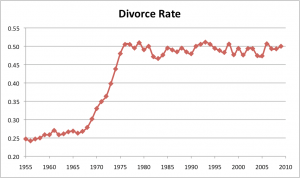

< < < Back
How We Can Fix The Problem With Western Marriage – Return Of Kings
Marriage is intended to be a sacred bond between a man and a woman, preferably lasting a lifetime, and a stable platform for them to raise children. This institution dates back to the dawn of civilization. Altogether, it’s good for society, and—if things work out—good for individuals.
It’s a fact that children raised within a stable marriage tend to have better outcomes. There’s a reason why “bastard” is a generic insult, even though it’s not the fault of those who literally are bastards. It would be great for our civilization right now if more financially secure couples were having children, rather than letting the government be a surrogate husband while under-parented children all too often run wild.
The consensus position here, though, is that marriage is all too often a sucker deal for men. There’s a reason for this. Statistically, it’s a coin toss: half the time, nothing bad happens. The other half, you get divorced. Usually for a man, he loses his kids, along with half of everything he’s worked for, while having to pay the ex-wife a monthly allowance. There’s a word for this: theft.
Let’s take a closer look at why this is so, and what can be done to fix the problem.
No-fault divorce

Spreading the unhappiness around
In times past, people could end a marriage if there was a real reason: infidelity, abuse, addiction, mental problems, refusal of relations, and so forth. After no-fault divorce, no real reason was needed; “mutually irreconcilable differences” was the catch-all legal boilerplate. Rather than trying to work things out, they could just split up.
Often, mutually irreconcilable differences are stated as “I’m not happy”. There are a couple of problems with that. First, making someone else responsible for one’s emotional state is a silly expectation. Further, ups and downs will always happen; that’s just the way life works, and it’s folly to expect otherwise. Finally, a marriage is carried out either by a judge or at an altar; that’s serious business. In earlier times, breaking a vow because of boredom wasn’t socially approved. Back in the barbarian days (or even the 1800s), oath-breaking was a foul deed; modern society has lost something vital.
Sometimes the reasons for divorces today are pretty stupid. In two instances, guys I know were divorced because they wouldn’t comply when the wives demanded to make changes to their mutual vacation plans at the last minute. One couple had a two year old, and the other had two small children. Way to go, Mom! Happy yet?
These are examples of a frivolous divorce (“frivorce“), also called the YOLO divorce. Actions have consequences; the marriage strike followed the rise of the frivorce. Today, the marriage rates are half of what they once were. Even the Blue Pill public knows it’s a sucker deal for men.
Examining the numbers

We have two rather startling statistics about marriage in the USA, likely pretty similar in the rest of the developed world:
- About 50% of marriages end in failure
- About 80% of divorces are initiated by the wives
So, given the above, outcomes for marriage are about the following:
- 10% of marriages are ended by the husbands;
- 40% of marriages are ended by the wives; and
- 50% of marriages endure.
Looking a little closer, there’s a category of people who take marriage pretty seriously and won’t bail unless there are serious problems. The other category sees marriage as a step beyond “going steady” but doesn’t think of it as a lifetime commitment. That’s also informed by several factors as well, some of which boil down to a person’s character and morals. So, if someone bailed on her last marriage because she “wasn’t happy”, you might not want to be the next guy to put a ring on her finger!
In any event, we could have a 20% overall divorce rate if women were as seriously committed to marriage as men. That would be pretty cool, because an 80% success rate is a lot more acceptable of a risk than a 50% success rate.
So what accounts for the above statistics? This isn’t just a matter of human nature; it’s the lack of social restraints that allowed this flakiness to thrive. Society was different in earlier times, which is one piece of the puzzle. Another part accounting for the difference is the cui bono principle: “Who benefits?” So let’s follow the money.
Alimony
So she needs him like a fish needs a bicycle, does she?
Although the USA had no-fault divorce everywhere by the 1970s, some aspects of this part of “family law” (the branch of jurisprudence devoted to breaking up families) still go back to a 19th century understandings. The particulars are:
- Women are delicate flowers who can’t fend for themselves and need special protection;
- A woman who got divorced was “damaged goods” since she no longer was a virgin; and
- If a divorce happens, it’s probably because the man did something bad.
So, back in the 1800s, all this added up to the concept that after a divorce, the man “owed” his former wife an indemnity: alimony. These days, that’s a sad joke. Today, women have it drummed into them that they’re strong and independent and can pursue any career they want, virgin brides outside of devout religious communities are pretty rare, and—largely lacking the social restraints and male leadership they once had—they even can be praised (rather than criticized) for any sorts of egregious conduct.
The legal justification for alimony is “to support her in the lifestyle to which she has become accustomed”. However, this outdated understanding is pretty out of touch with modern times! Further, many divorced men have to drastically downgrade their living conditions, sometimes even getting thrown out of the home he bought—what about his lifestyle?
The other outdated argument for alimony is that the ex-wife is basically owed back wages for all that homemaking. Even in the 1800s, it was baloney; the husband was putting food on the table and keeping a roof over their heads all that time, now wasn’t he? Alimony is supposed to be gender-neutral, but in practice, only 4% of alimony recipients are men. That must suck for any female executives and celebrities who got divorced from their boy-toys, and they tend to be pretty furious about it when that happens. All I’ve got to say is, welcome to our world!
Alimony must be abolished; it’s theft. When a relationship ends, its benefits should end too.
Child support
How much of this really will be spent on your kid? Who the hell knows?
What happens to the children is the most depressing aspect of divorces today. We need to fix that. By default, joint custody should be awarded, unless there’s a compelling reason otherwise. Unsupported smear tactics (often encouraged by bottom-feeder lawyers, which should be grounds for disbarment for life) don’t count.
When child support is awarded, the cost basis should be the same as what the state pays to foster parents. In many cases, inflated child support is being used as back door alimony. Further, DNA testing should be mandatory. If the child isn’t the ex-husband’s (with the exception of adoptees), he shouldn’t be defrauded any further. The cheating ex-wife knows who the real father is; she can go after him instead.
More financial chicanery
Say goodbye to half of it
Property division is another opportunity for a guy to get robbed in court. The idea that a man might have to lose half of everything he worked for is another outdated relic of so-called family law. That needs to end too. Instead, we should let people exit from marriage with whatever assets and property they brought into it. As for what was acquired afterward, division of assets can be calculated proportionally based on what each party earned minus spent on themselves.
Feminists tell us that a woman doesn’t need a man, so why do any of them need an ex-husband’s money? They should put up or shut up. Since feminists are not clamoring for reform of this area of the law (as well as abolition of alimony) in the name of equality—which they don’t really care about these days—then it’s yet another example of them wanting to have their cake and eat it. The goal of second-wave feminism was to wreck the family, and they did a fine job of it.
Further, we need to get rid of “heart balm” lawsuits in the jurisdictions where they still exist. When a man proposes marriage, it’s an offer, not a contract. It was different back in the Renaissance, but times have changed. I might add that even back in those days, if a woman changed her mind, the man usually had no legal recourse. These archaic measures have no place in modern society. Do guys sue whenever someone flakes on a date? That’s a “promise” too, isn’t it?
Other factors
Divorce lawyers have an incentive to keep the system as it now exists, and to discourage any clients from having second thoughts; it’s their bread and butter. They either get a percentage of whatever they steal from the ex-husband, or they get an hourly rate and have an incentive to drag things out and talk up the bill. It’s time we got these lawyers off the gravy train. What other area of the law provides financial rewards for breach of contract?
Divorce is good for real estate and big business too; don’t count on their support in helping to reform the system. Every family that splits up will now need two residences, and furnishings for both. The extra demand is one reason why housing costs are crazy high.
Finally, society encourages unrealistic expectations. This includes animated fairy tale movies for kids, bridezilla magazines, romance novels where the guy has a yacht and abdominals like a plate of spaghetti, etc. Feminists also have been guilty of encouraging unrealistic expectations, along with stirring up conflict between the sexes. Finally, there are the bitter divorced friends giving “helpful advice” because misery loves company. Discrediting all the above will be helpful.
Really, today’s feminist divorce system hurts women too. For one reason of several, if a woman marries at 25 and divorces at 35, is trading up in terms of mate quality very likely? I think we all know the answer to that one!
In summary
If these proposed reforms are adopted, this will strengthen society greatly. Couples will still be able to get out of dysfunctional marriages. However, if the wife no longer has a financial incentive to leave at the first sign of trouble—she won’t be able to rob her husband in court—then she’ll make more of an effort to work out any problems that exist, instead of divorcing over things like boredom or vacation plans.
Read More: How To Reduce Your Risk Of Divorce